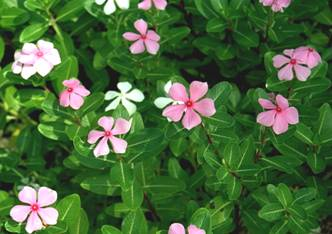
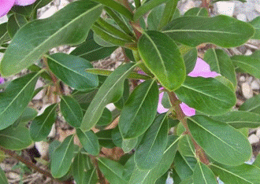

HORT 282 :: Lecture 25 :: PERIWINKLE

PERIWINKLE
 Periwinkle (Catharanthus roseus (L) G. Don), belonging to the family Apocynaceae, is one of the few medicinal plants which has found mention in the folks medicinal literature as early as 2nd BC. The plant has been widely used as an abortifient, purgative, antidiabetic, diuretic, hemorrhagic antimalarial, antidysentric and against skin diseases by the ancient people.
Modern investigation have shown that periwinkle contains more than 100 alkaloids distributed through all the parts of the plant like ajmalicine (raubasin), serpentine and reserpine which are well known for their hypotensive and antispasmodic properties Periwinkle gained further importance after the isolation of vincrisine and vinblastine alkoloids which have importance in cancer, therapy. Vincristine sulphate is being marked under the trade name ONCOVIN, which is used against acute leukemia, and vinblastine sulphate as VELNR to cure Hodgkin’s disease and other lymphomas and chonocarcinomas. In addition to the above, the alkaloids leurosidine, leurosovine and rovidine also possess anticancer properties, but they are not used clinically.
Origin and Distribution
The plant is a native of Madagascar and from there it has spread to India, Indonesia, Indo-China, Philippines, South Africa, lsrael, USA and other parts of the world. In India, it is being grown in Tamil Nadu, Karnataka, Andhra Pradesh, Madhya Pradesh, Gujarat and Assam in an area of about 3000 ha. Farmers prefer it because of its wide adaptability and its ability to grow on marginal lands and drought-tolerance that rules out crop failure. The presence of alkaloids all over the plant body confers immunity to cattle browsing and the crop loss due to pilferage.
USA is the world’s largest user of this plant’s raw material. A single firm which has the patent to manufacture Vinblastine and Vincristine sulphate have been consuming more than 100 t of leaves of the plant annually. Most of it has been imported from Malagasy and the remaining from India and Mozambique. Hungary is also been one of the major consumer of its leaves followed by West Germany, Italy, Netherlands (raubasin), serpentine, etc. The total demand for these countries is more than 100 t of roots annually.
Soil
The crop is quite hardy and grows well on a wide variety of soils, except those which are alkaline or water-logged. Deep sandy loam to loam soils of medium fertility are preferred for its large-scale cultivation. Because, in this soil there is not only a better development of roots, but it is also easy to take them out at harvest time.
Climate
The distribution of the plant shows that there is no specificity in its climatic requirements. It comes up well in tropical and subtropical areas. However, the growth in tropical areas is better than in the subtropical areas, where its growth is slow due to the low temperatures in winter. It can be successfully grown up to an elevation of 1300 m above sea level. A well distributed rainfall of 100 cm or more is ideal for raising this crop on a commercial scale under rainfed conditions.
Manures and Fertilizers
In areas where FYM is available, it is applied at the rate of 10-15 t/ha to obtain good growth and yield from periwinkle plants. If irrigation is available it is recommended to grow leguminous crops like sun hemp or horse gram and when then reach the flowering stage bury them inside the soil before sowing or transplanting periwinkle. Green manure will act as a substitute for FYM and is useful in the areas where it is either difficult to procure or it is very expensive. The seeds of the green manure crop should preferably be treated with bacterial inoculants prior to sowing, to increase the development of root nodules which absorb atmospheric nitrogen and fix it in the soil. In case organic manure is not applied, it is advisable to apply a basal dose of 25 kg N, 50 kg P2O5 and 75 kg K2O per hectare per year.
Irrigation
In places where rainfall is distributed throughout the year, the plants do not require any irrigation. However, in areas where rainfall in restricted to a few months in a particular period approximately 4-5 irrigation will help the plants
Weed Control
This crop requires two weedings in the initial stages of its growth. The first weeding may be done about 60 days of sowing and the second at 120 days at again. Mulching the paid with cut grass or rice-straw will also minimize the weed growth.
Application of the chemical weedicide Sinhar at 4-5 kg/ha as a pre-emergent spray is highly effective against oil mount weeds similarly, the application of a mixture of 2-4-D and Grammaxone at the rate of 25 kg/ha to the soil before sowing keeps the weeds under control.
Insect Pests and Diseases
The plant is sufficiently hardy and practically free from the attack of insect pests an diseases. However, the oleander hawk month is reported on this crop. Occasionally, some plants have been found to suffer from the little leaf disease, due to infection be mycoplasma resulting in stunted growth and resetting of the leaves of the plant. The disease can be effectively checked by uprooting and destroying the affected plants.
Recently, another disease ‘dieback’ or twig blight or top rot caused by Pythium butleri, Phytophthora nicotianae, P.debaryanum, Alternaria tenuissima and Colletotrichum demothum has been found to affect the crop during the monsoon in some parts of the country. The disease can be controlled by spraying Dithane Z-78 at an interval of 10-15 days. The other fungal diseases reported on this crop are Fusarium wilt caused by Fusarium solani and Sclerotiurn rolfsi blight caused by Phthium aphanidermatum as well as leaf-sport caused by Myrathesium raridum. A. tenuissma, A. oltemata, Rhizoctonia solani, Ophiobolus catharanthicala, Hoplosporella marahwadenis and Glomerella cingulata.
Harvesting
i) Roots
The crops are harvested after 12 months of sowing. The plants are cut about 7.5 cm above the ground level and dried for the stems leaves and seeds. The field is then copiously irrigated and when a reaches the proper condition for digging, it is ploughed and the root are collector. The roots are later washed well and dried in the shade.
ii) Leaves, Stem and Seeds
If there is a demand for leaves, two leaf stripping, the fist after 6 months and the second after 9 months of sowing – can be taken. A third leaf stripping is also obtained when whole plant is harvested. After the plant is harvested it is dried in the shade. Its second nods dehisce and release the seeds with a light threshing which can be used for the next sowing. The leaves and stems are also collected separately. It may be mentioned here; that the seeds collected in this way will have poor germination because they have been collected from pods in different degrades of maturity. Therefore, in order to obtain good seeds it is advisable to collect them from mature pods two to three months before the harvest of the crop. The aerial part of the plant between 7.5 cm and about 25 cm above the ground level is taken as the stem for the purpose of marketing.
The total alkaloid content in the leaf varies from 0.15 to 1.34%, of which the average content of vinblastine is 0.002%, while that of vincristine is 0.005%.

Yield
Under irrigated conditions, about 4 t/ha of leaves, 1.5 t/ha of stem, and 1.5 t/ha of roots on an air-dried basis may be obtained. Whereas, under rainfed conditions, about 2 t/ha of leaves and 0.75 t/ha each of stem and roots on an air-dried basis may be obtained.
- Anti cancerous principles present in periwinkle _________
- Periwinkle belongs to the family _____
- Vincristine sulphate is being marketing under the trade name of ___________
- Medicinal use of periwinkle is ___________
- Hypotensive alkaloid present in periwinkle is ___________
| Download this lecture as PDF here |